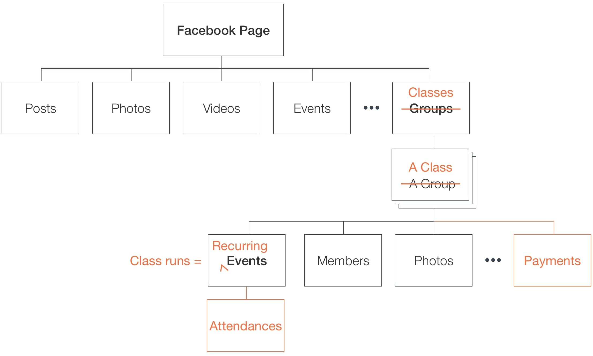
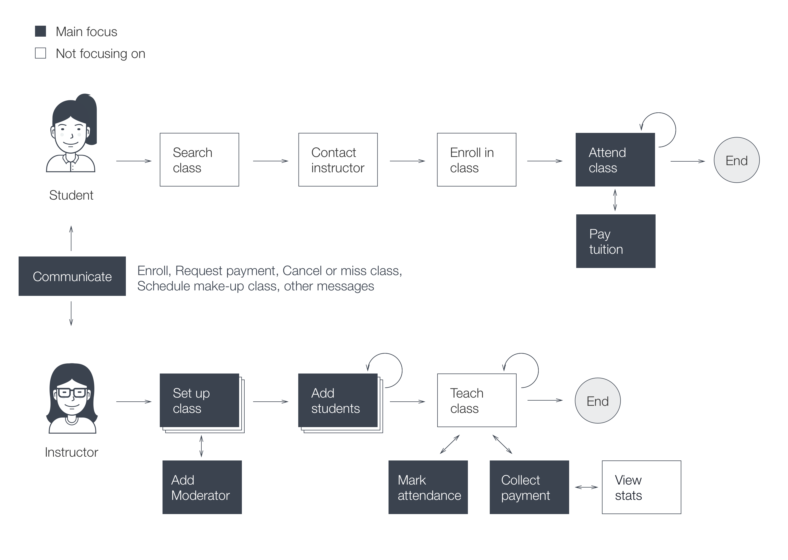
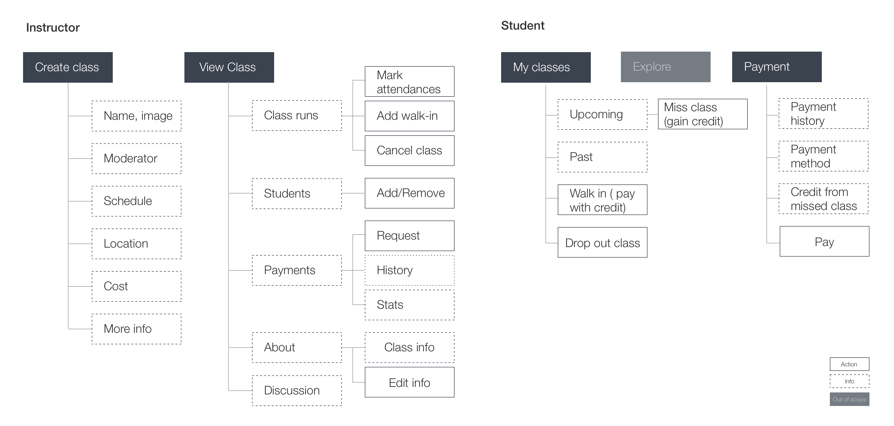
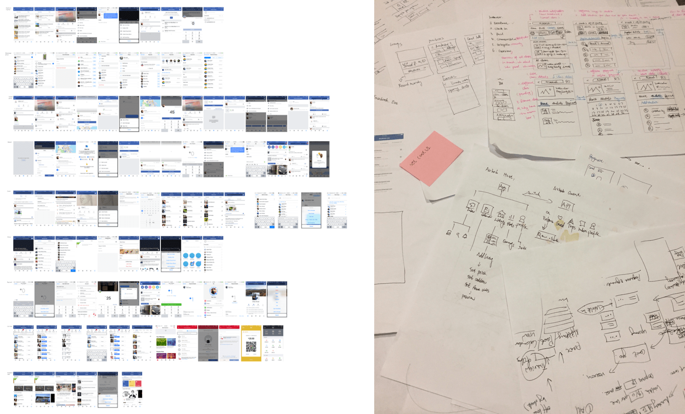
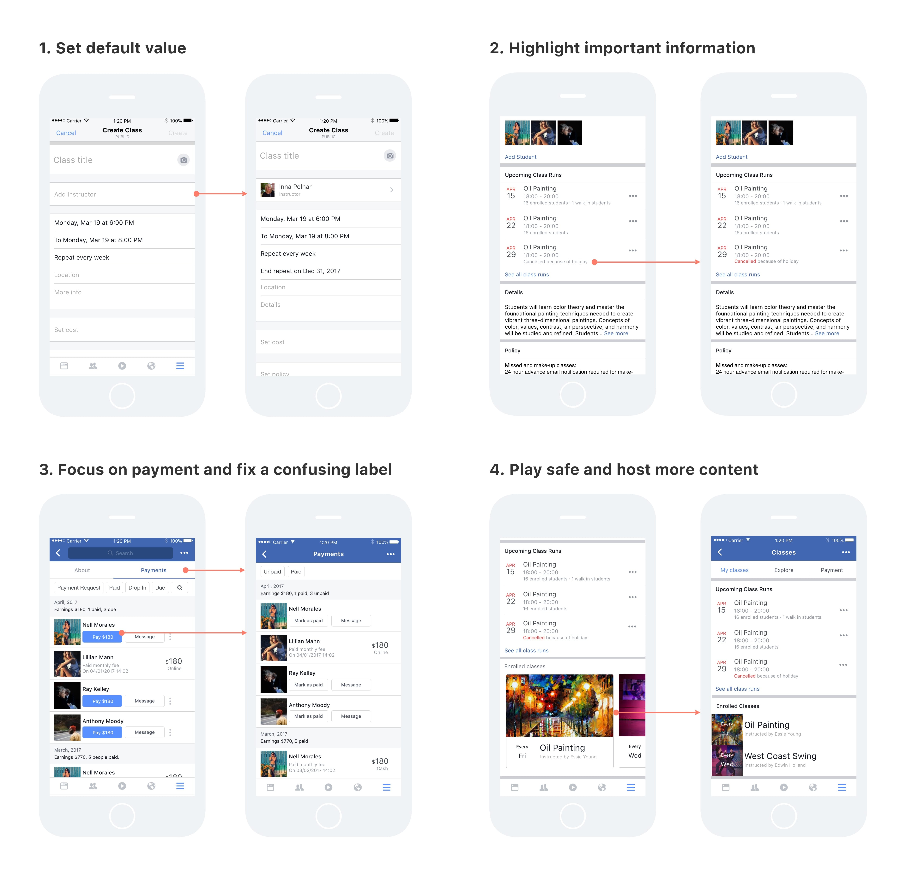

ClassTrack Design
An attendance and payment management tool inside Facebook
BACKGROUND
Bummer
On a Tuesday night, I took an Uber at the surge hour, arrived on time for my drawing class, but only saw my boyfriend standing in front of a closed door. He said the instructor canceled the class by email. We were not informed as we are not in the regular class list — it was our make-up class that day, and the instructor forgot to add us there in her attendance management spreadsheet.
A spreadsheet
My drawing instructor is a middle-aged lady. She owns a lovely art studio, teaching 4–6 classes each week and managing all the enrollments, attendances, and payments in a spreadsheet. I asked her how the spreadsheet works out for her.
Inna: It is not perfect, do you know any other tools?
I: What doesn’t work for you?
THE GAP
For instructor
Inna spends lots of time in managing the spreadsheet manually. Here are some key tasks:
- Clone a new tab and fix the date every month
- Copy email addresses manually to send tuition reminder, class cancellation, or any other messages
- Mark on the spreadsheet right away for every change (attendance, payment, or makeup class request) or else it is very easy to lose track
For students
My boyfriend and I find it difficult to remember how much we have paid, or how many make-up classes we have left. We do not have any spreadsheet to track those (it is too much, even for me :D).
THE CHALLENGE
How can we (both instructors and students) track the attendances and payments more seamlessly?
HYPOTHESIS
HOW DOES IT FIT IN FACEBOOK?
Don’t reinvent the wheel, just realign it. — Anthony J. D’Angelo
Facebook has three features that very related to ClassTrack:
- Facebook event: bring people together. Each class could be considered as a recurring event with each run as a single event.
- Facebook page: a place for people to meet your business. All the classes hosted by the business owner can be displayed as a tab on her Facebook page, just like other tabs such as Posts, Videos, Events, Services, Jobs, etc.
- Facebook group: a space to communicate about shared interests with certain people. The concept of class is very similar to Facebook group. Both manage members and events. The difference is Facebook group focusing on members and their communication, while the ClassTrack aims to serve instructor administrative needs first.
In a sentence, ClassTrack is a recurring-event group under Facebook page.
DESIGN
User Workflow and Design Scope
First step, map out the user workflow and scope down the MVP version. The main focus is the key tasks related to enrollments, attendances, payments, and communication.
Mapping feature and content
Next is mapping the main features and content as below.
Low-fidelity Design
Then play with various mobile apps, draw low-fidelity wireframes to make sense of the user flow and make the concept tangible.
Design, Prototype, and Usability Testing
Moving to high fidelity design involved self-evaluation and getting feedback from friends. Below are the quick iterations based on usability testing.
FINAL DESIGNS

PLAY WITH THE PROTOTYPE
For Instructor
For Student
THE REFLECT
The project is a good opportunity to hone my design skills. But what matters most? The people who give our design meanings.
I will have more time with my grandchilden if this tool really exists.